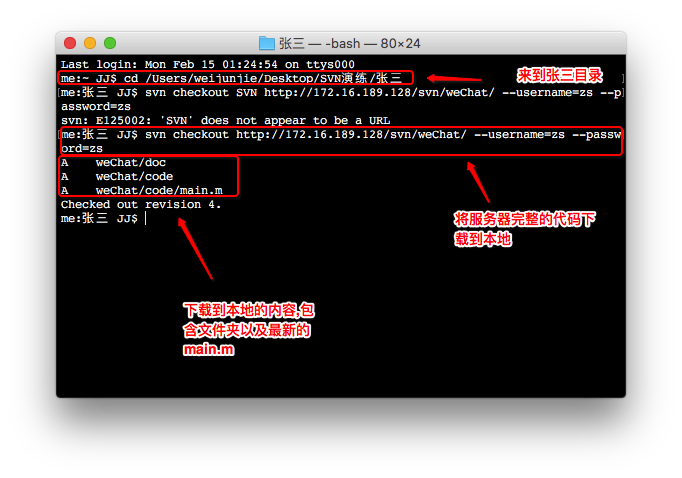
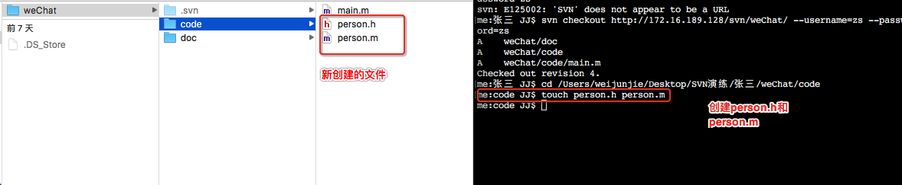
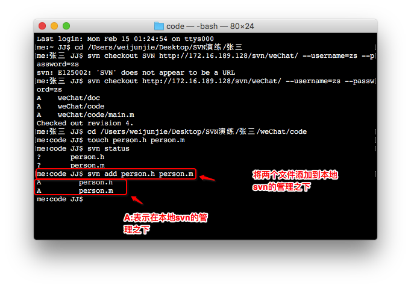
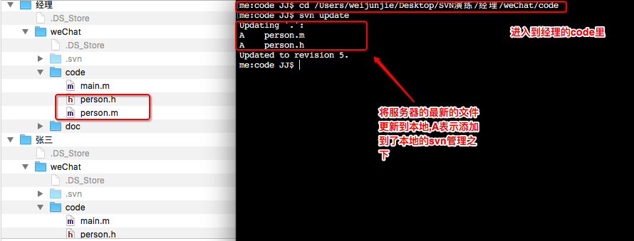
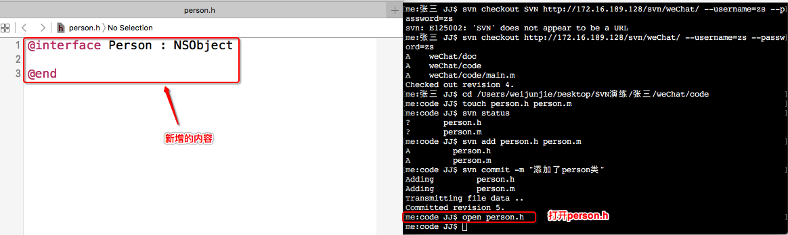
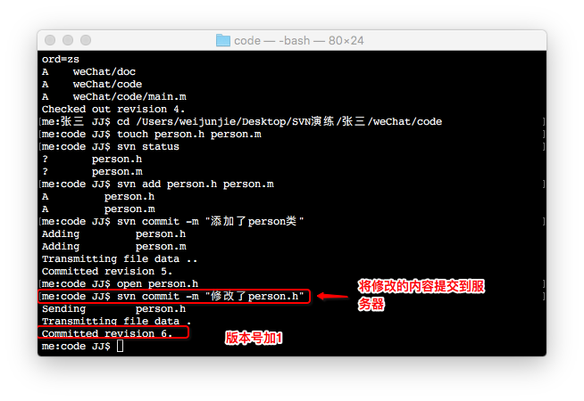
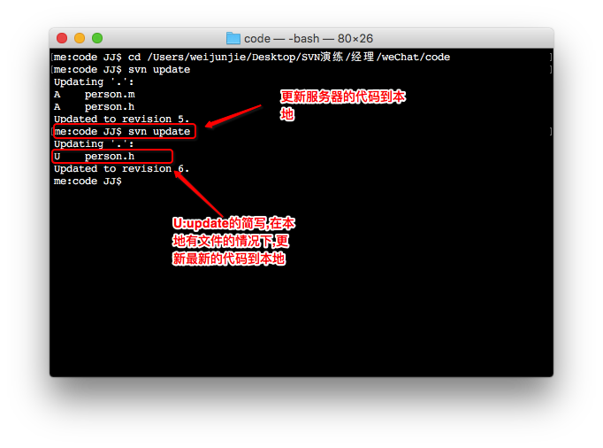

- 一.准备工作
再打开一个命令行,一个作为张三的命令行,一个作为经理的命令行来进行多人开发
- 二.张三开发
1.张三将服务器代码完整的下载到本地,先进入张三的目录,再通过checkout命令将服务器所有内容下载到本地
svn checkout 服务器地址 --username=zs --password=zs
2.张三在开发过程中需要person类,那么来到张三code目录下进行创建
touch person.h person.m : 创建person类
3.查看两个文件的状态
svn status : 查看文件状态

4.状态?为不在svn的管理之下,将person.h 和person.m添加到svn的管理之下
svn add person.h person.m
5.将添加的文件上传到服务器
svn commit -m "添加了person类" : 后面不加文件名,则会将在svn管理之下,没有上传到服务器的代码都上传到服务器中

6.通过网页来查看服务器内是否有person类

- 三.经理开发
1.将经理与张三的文件夹上下排布,以便于观察两个文件夹的状态变化

2.经理将服务器最新的代码更新到本地
svn update : 将服务器最新的代码或者最新的文件下载到本地

- 四.张三开发
1.张三创建的person.h,可能不是空的,打开person.h,添加代码
open person.h : 打开person.h
2.修改了文件状态为M,在svn的管理之下,不需要再添加一遍,直接提交到服务器
svn commit -m "修改了person.h"

- 五.经理开发
经理想要拿到最新的代码,直接更新就可以了
svn update

- .总结
1.本节内容主要是模拟在公司内进行多人开发,比如张三创建文件或者修改文件之后提交到服务器,其他人再通过svn update命令将修改的内容或者最新的文件更新到本地
2.新增的命令
svn update : 更新最新的代码或者文件到本地,属于在日常开发中很常用的命令